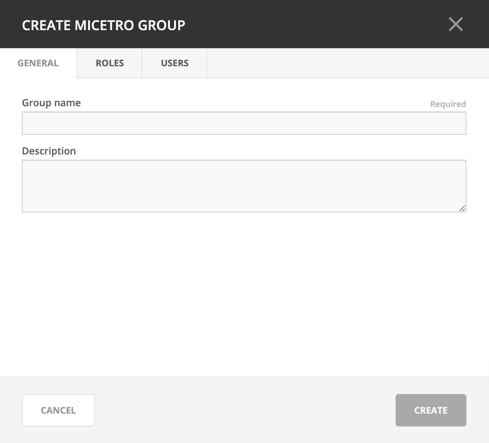

Groups
Groups allow you to manage multiple individual users, based on needs for the same access across the system.
Adding a New Group
Navigate to and select Groups in the filtering sidebar. The default groups are displayed here, as well as any other groups you have already created.
Click the Add button and select whether to add an external (authenticated and managed through an external source such as Active Directory or LDAP) or create a local group (authenticated and managed through Micetro only).
For local group the following dialog box displays:

- Group name
The name for the group you are creating.
- Description field
(Optional) Some information that describes the function of this group.
- AD Integrated
Check this box to define this group as an Active Directory Integrated group. When checked this group name will be matched against groups defined in Active Directory. For more information how on this works refer to External Authentication.
- Roles
Any roles that members of this group will automatically assume.
- Users
Any users that you want to add to this group. (Users can be added/removed at any time.)
{kind=link}
When all selections/entries are made, click Save.
Editing a Group
Through this function, you can edit the group name and/or description, and indicate whether this group is Active Directory integrated.
Navigate to and select Groups in the filtering sidebar.
To select a single group, click on the group’s name. To select multiple groups, press/hold the Ctrl (Cmd on Mac) key and then click on each group’s name.
From the ellipsis menu, select Edit group properties or use .
Make the desired changes to the group’s information. In the Users tab you can remove users from the group.
Click Save to save the changes.
Deleting a Group
Through this function, you delete a group.
Navigate to and select Groups in the filtering sidebar.
To remove a single group, click on the group’s name. To remove multiple groups, press/hold the Ctrl (Cmd on Mac) key and then click on each group’s name.
From the ellipsis menu, select Remove user or use .
To remove the group, click the Yes button. The group is removed.
External groups (Active Directory, LDAP)
For external groups, such as those managed in Active Directory, use the Add –> AD Group or Add –> LDAP group. The group name field must match the name in the external authentication. See External Authentication.
Note
External groups do not have a Users tab when adding the group to Micetro.
After the external group is added to Micetro, it will not contain users. Users are only added to the external group after their first login.
For more information, see AD Sites and Subnets and External Authentication.